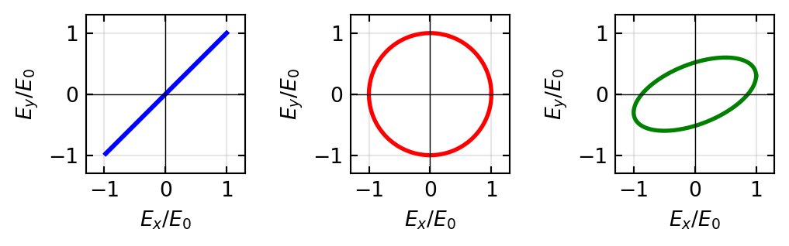
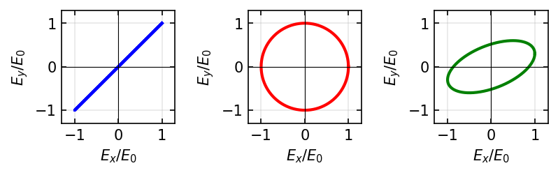
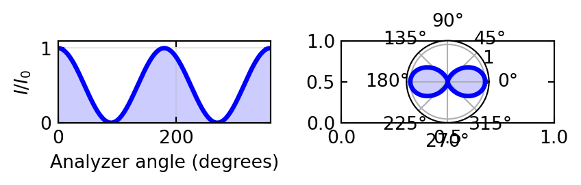
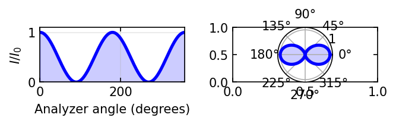
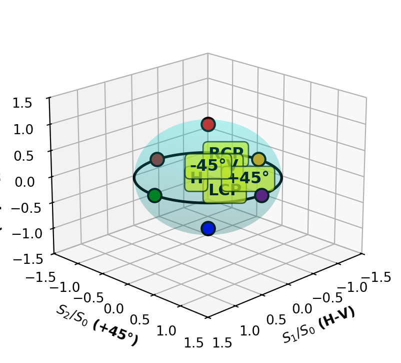
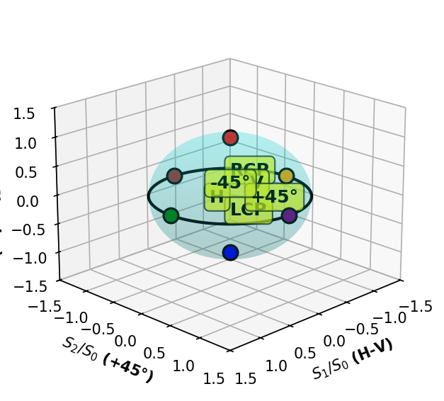

Polarization states: E-field vector traces in the transverse planeLight is a transverse electromagnetic wave. The electric field oscillates perpendicular to the propagation direction. Optical effects depend almost entirely on the electric field oscillation. The way the electric field oscillates in space and time defines the polarization state of light.
Polarization is fundamentally important in photonics: - Optical communication: Polarization-division multiplexing (PDM) increases bandwidth - Display technology: Liquid crystal displays (LCDs) rely on polarization control - Stress analysis: Photoelasticity uses polarized light to visualize strain - Quantum optics: Single photons carry quantum information in polarization - Remote sensing: Depolarization indicates atmospheric properties
This lecture develops the mathematical formalism to describe and manipulate light polarization.
Starting from Maxwell’s equations in vacuum:
\[\nabla \times \mathbf{E} = -\frac{\partial \mathbf{B}}{\partial t}\] \[\nabla \times \mathbf{B} = \mu_0 \epsilon_0 \frac{\partial \mathbf{E}}{\partial t}\]
Taking the curl of the first equation yields:
\[\nabla^2 \mathbf{E} = \mu_0 \epsilon_0 \frac{\partial^2 \mathbf{E}}{\partial t^2} \tag{1}\]
This is the wave equation, with wave speed \(c = 1/\sqrt{\mu_0 \epsilon_0}\).
For a plane wave propagating in the \(+z\) direction:
\[\mathbf{E}(z,t) = \mathbf{E}_0 \cos(kz - \omega t + \phi)\]
where \(k = 2\pi/\lambda\) is the wavenumber and \(\omega = 2\pi f\) is the angular frequency.
The electric field has transverse components:
\[E_x(z,t) = E_{0x} \cos(kz - \omega t + \phi_x)\] \[E_y(z,t) = E_{0y} \cos(kz - \omega t + \phi_y) \tag{2}\]
At a fixed position (\(z = 0\)):
\[E_x(t) = E_{0x} \cos(\omega t - \phi_x)\] \[E_y(t) = E_{0y} \cos(\omega t - \phi_y)\]
The relative phase \(\delta = \phi_y - \phi_x\) determines the polarization state.
When \(\delta = 0\) or \(\delta = \pi\):
\[E_y = \frac{E_{0y}}{E_{0x}} E_x\]
The electric field vector oscillates along a straight line in the \(xy\) plane.
When \(E_{0x} = E_{0y} = E_0\) and \(\delta = \pm \pi/2\):
\[E_x(t) = E_0 \cos(\omega t)\] \[E_y(t) = E_0 \sin(\omega t) \quad \text{(right circular)}\]
The electric field vector rotates with constant magnitude \(E_0\).
For arbitrary amplitudes and phases, the E-field vector tip traces an ellipse.

Polarization states: E-field vector traces in the transverse plane
The Jones vector represents a plane wave:
\[\mathbf{J} = \begin{pmatrix} E_x \\ E_y \end{pmatrix} = \begin{pmatrix} E_{0x} e^{-i\phi_x} \\ E_{0y} e^{-i\phi_y} \end{pmatrix} \tag{3}\]
Horizontal: \(\mathbf{J}_H = \begin{pmatrix} 1 \\ 0 \end{pmatrix}\), Vertical: \(\mathbf{J}_V = \begin{pmatrix} 0 \\ 1 \end{pmatrix}\)
Right circular: \(\mathbf{J}_{RCP} = \frac{1}{\sqrt{2}} \begin{pmatrix} 1 \\ -i \end{pmatrix}\), Left circular: \(\mathbf{J}_{LCP} = \frac{1}{\sqrt{2}} \begin{pmatrix} 1 \\ i \end{pmatrix}\)
Intensity: \(I = |\mathbf{J}|^2 = |E_x|^2 + |E_y|^2\)
Horizontal: \(M_H = \begin{pmatrix} 1 & 0 \\ 0 & 0 \end{pmatrix}\), Vertical: \(M_V = \begin{pmatrix} 0 & 0 \\ 0 & 1 \end{pmatrix}\)
At angle \(\theta\): \(M(\theta) = \begin{pmatrix} \cos^2\theta & \cos\theta\sin\theta \\ \cos\theta\sin\theta & \sin^2\theta \end{pmatrix}\) {#eq-jones-polarizer}
Quarter-wave at 45°: \(M_{QWP} = \frac{1}{\sqrt{2}} \begin{pmatrix} 1 & i \\ i & 1 \end{pmatrix}\)
Half-wave at angle \(\alpha\): \(M_{HWP}(\alpha) = \begin{pmatrix} \cos 2\alpha & \sin 2\alpha \\ \sin 2\alpha & -\cos 2\alpha \end{pmatrix}\)
Rotation: \(R(\theta) = \begin{pmatrix} \cos\theta & -\sin\theta \\ \sin\theta & \cos\theta \end{pmatrix}\)
# Example: H-polarized light → QWP at 45° → Right circular
import numpy as np
# Matrices
M_pol = np.array([[1, 0], [0, 0]], dtype=complex)
M_qwp = (1/np.sqrt(2)) * np.array([[1, 1j], [1j, 1]], dtype=complex)
# Initial: horizontal linear
J = np.array([1, 0], dtype=complex)
print("Initial: H-polarized")
print(f" Intensity: {np.sum(np.abs(J)**2):.2f}")
# After polarizer
J = M_pol @ J
print("After H-polarizer: intensity =", np.sum(np.abs(J)**2).real)
# After QWP at 45°
J = M_qwp @ J
print("After QWP at 45°: Jones vector =", J)
print("Result: Right Circular Polarization!")Initial: H-polarized
Intensity: 1.00
After H-polarizer: intensity = 1.0
After QWP at 45°: Jones vector = [0.70710678+0.j 0. +0.70710678j]
Result: Right Circular Polarization!When linearly polarized light passes through a second polarizer at angle \(\theta\):
\[I_{\text{transmitted}} = I_0 \cos^2(\theta) \tag{4}\]


Stokes parameters describe any polarization state (fully or partially polarized):
\[S_0 = \langle E_x E_x^* \rangle + \langle E_y E_y^* \rangle \tag{5}\] \[S_1 = \langle E_x E_x^* \rangle - \langle E_y E_y^* \rangle\] \[S_2 = \langle E_x E_y^* + E_y E_x^* \rangle\] \[S_3 = i\langle E_x E_y^* - E_y E_x^* \rangle\]
Unpolarized: \(\mathbf{S} = I_0 \begin{pmatrix} 1 \\ 0 \\ 0 \\ 0 \end{pmatrix}\)
H-linear: \(\mathbf{S}_H = I_0 \begin{pmatrix} 1 \\ 1 \\ 0 \\ 0 \end{pmatrix}\)
Right circular: \(\mathbf{S}_{RCP} = I_0 \begin{pmatrix} 1 \\ 0 \\ 0 \\ 1 \end{pmatrix}\)
Degree of polarization: \(P = \frac{\sqrt{S_1^2 + S_2^2 + S_3^2}}{S_0}\)
The Poincaré sphere geometrically represents all fully polarized states using normalized Stokes parameters:
\[x = S_1/S_0, \quad y = S_2/S_0, \quad z = S_3/S_0\]
Each point on the unit sphere represents a unique polarization state: - North pole: Right circular - South pole: Left circular
- Equator: All linear polarizations

Poincaré sphere: geometric representation of polarization states
The Stokes vector transforms through optical elements via Müller matrices (\(4 \times 4\)):
Horizontal polarizer: \[M_H = \frac{1}{2} \begin{pmatrix} 1 & 1 & 0 & 0 \\ 1 & 1 & 0 & 0 \\ 0 & 0 & 0 & 0 \\ 0 & 0 & 0 & 0 \end{pmatrix}\]
Retarder (retardance \(\Gamma\)): \[M_{\text{ret}} = \begin{pmatrix} 1 & 0 & 0 & 0 \\ 0 & 1 & 0 & 0 \\ 0 & 0 & \cos\Gamma & \sin\Gamma \\ 0 & 0 & -\sin\Gamma & \cos\Gamma \end{pmatrix}\]
Müller matrices work for any polarization state.
Wire-grid: Parallel metal wires transmit perpendicular polarization, reflect parallel.
Dichroic (Polaroid): Absorbing aligned molecules. Affordable, used in displays.
Glan-Thompson: Calcite crystals at Brewster angle. Extinction ratio \(> 10^{-8}\), highest quality.
Brewster angle: p-polarized light has zero reflection at \(\theta_B = \arctan(n)\).
Materials: Quartz, calcite, mica (birefringent crystals)
Retardance: \(\Gamma = \frac{2\pi \Delta n d}{\lambda}\) where \(\Delta n = |n_e - n_o|\)
Quarter-wave (QWP): \(\Gamma = \pi/2\) converts linear ↔︎ circular at 45°
Half-wave (HWP): \(\Gamma = \pi\) rotates linear polarization
Achromatic: Multiple plates cancel wavelength dependence
Optical rotation (chiral materials): \(\theta = \alpha \ell\) (rotatory power \(\alpha\))
Faraday rotation (magneto-optic): \(\theta = V B \ell\) (non-reciprocal, used in isolators)
Polarization is the oscillation direction of the electric field perpendicular to propagation.
Three states: linear (straight oscillation), circular (rotation), elliptical (combination).
Jones vectors/matrices for fully polarized light; Stokes parameters/Müller matrices for any state.
Poincaré sphere: Geometric representation of all polarization states.
Optical elements: Polarizers (select axis), retarders (introduce phase), rotators (rotate axis).
Key applications: Fiber optics, LCD displays, stress analysis, quantum optics.
The elegant mathematical structure—from Maxwell’s equations through Jones calculus to Poincaré geometry—demonstrates the remarkable unity underlying optical phenomena.
Polarization is one of the most accessible optical phenomena for hands-on experiments. The following activities connect the theory above to real laboratory practice:
Polarizer and analyzer (Malus’s law) Set up two linear polarizers on an optical rail with a white-light source or laser. Rotate the analyzer in 10° steps and measure the transmitted intensity with a photodetector. Plot \(I(\theta)\) and fit to \(I_0 \cos^2\theta\). Deviations from perfect extinction reveal the quality of your polarizers and any residual birefringence in optical components.
Quarter-wave plate: linear → circular Insert a quarter-wave plate between crossed polarizers. Rotate it until the fast axis is at 45° to the first polarizer — you should recover maximum transmission through the analyzer (since circular polarization has equal projections on any linear axis). Verify by rotating the analyzer: intensity should be nearly constant.
Stress birefringence (photoelasticity) Place a transparent plastic ruler or protractor between crossed polarizers and illuminate with white light. The colorful fringe patterns reveal internal stress from the manufacturing process. This directly visualizes how mechanical stress creates birefringence. Quantitative analysis connects stress to the retardance via the stress-optic coefficient.
Optical activity in sugar solutions Fill a glass tube with sugar solution of known concentration. Place between crossed polarizers and observe the rotation of the polarization plane. By varying concentration and tube length, verify the linear dependence \(\theta = [\alpha] \cdot c \cdot L\). This is the basis of saccharimetry (sugar concentration measurement in the food industry).
Brewster angle measurement Reflect a laser beam off a glass surface (microscope slide) and vary the angle of incidence. At Brewster’s angle \(\theta_B = \arctan(n)\), the reflected beam is perfectly linearly polarized. Verify with a polarizer. This gives an elegant measurement of the refractive index.
The following references are linked to the central Resources & Recommended Reading page:
Lecture 3: Polarization of Light — Introduction to Photonics